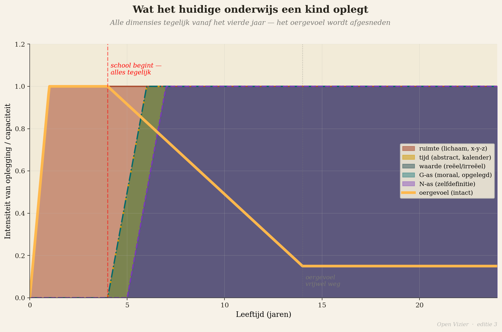

Якобус ван Меркстейн
Ребёнок трёх лет сидит на полу. Он играет. Строит что-то из кубиков — башню или то, что в воображении ребёнка является башней. Ребёнок полностью присутствует в том, что делает. В этой сосредоточенности нет ни прошлого, ни будущего. Есть только башня, рука, кубик, сейчас. Это первочувство в его полном действии.
Звонит звонок. В детском саду есть расписание. Время для кружка. Ребёнок должен остановиться. Ребёнок плачет, торгуется или учится рано молчать и подчиняться.
Этот момент не драматичен. Это просто расписание. Но это и тот момент, когда ребёнок впервые учится, что то, что он чувствует изнутри, — сосредоточенность, поглощённость, полное присутствие — подчинено внешней структуре, которую он не выбирал и не понимает. Он это усваивает — и не забывает.
Вот что мы делаем с нашими детьми. Не из злого умысла. Из логики расписания. Но цену платит ребёнок.
Семь измерений, по одному за раз


Статья 2 этого выпуска описала 7-мерную модель чувств: три пространственных измерения, измерение времени, ось G (любовь/ненависть, принятие/отвержение), ось W (реальное/нереальное) и ось N (индивидуальная позиция). Семь измерений, вместе описывающих человеческую внутреннюю жизнь.
Ребёнок от нуля до шести лет от природы дома в первых трёх: пространственных измерениях тела, движения, непосредственного окружения. Он живёт в своём теле. Он живёт в сейчас. Он эксперт в считывании атмосферы, людей и ситуаций. У него режим сна, максимально использующий ночной поток — маленькие дети много спят и много видят снов, и это не случайно. Доля REM-сна в ранние детские годы пропорционально наибольшая: мозг перерабатывает огромный объём новой информации именно через тот механизм, который описывает статья 3.
И что же мы делаем? Начинаем рано. Иногда уже с шести недель, когда ребёнок попадает в детский сад. Мы вводим измерение времени: расписания, режимы, понедельник и вторник, в половине одиннадцатого сок и печенье. Мы вводим нравственное измерение — ось G в её небесном обличье: быть добрыми с другими, ждать своей очереди, не бить, участвовать в правилах, которые предполагают, что ребёнок — нравственный субъект, способный сознательно управлять своими импульсами. Но ребёнок трёх лет — не таков. Префронтальная кора — средоточие нравственного рассуждения и контроля импульсов — полностью созревает лишь примерно к двадцати пяти годам. Мы требуем от трёхлетнего ребёнка функционировать как нравственный субъект двадцати пяти лет.
Мы вводим самоопределение: «Что тебе нравится? Кем ты хочешь стать? Какой твой любимый цвет?» Вопросы, произрастающие из оси N, из эксплицитного самосознания. Но ось N у четырёхлетнего ребёнка совсем не функционирует как индивидуализированная структура. Ребёнок не может ответить на этот вопрос из себя. Он угадывает — и угадывает именно это, а не исходит из себя, а из ожидания, заложенного в самом вопросе.
Мы вводим ось W: различие между реальным и нереальным, действительным и воображаемым. «Этого на самом деле не существует.» «Это только сказка.» «Монстров не бывает.» Но ось W в своей абстрактной когнитивной форме становится управляемой для ребёнка лишь примерно в десять–двенадцать лет. До этого возраста ребёнок живёт в мире, где граница между реальностью и воображением подвижна, — и это не ошибка, а стадия развития. Монстр под кроватью так же реален, как сама кровать. Кто это отрицает, отсекает не страх, а способность к символическому мышлению.
Все эти измерения — сразу, слишком рано, на мозг, который ещё к этому не готов.
Что слишком рано и слишком быстро ломает
Будем конкретны.
Слишком раннее введение измерения времени — расписаний и режимов до шестого года — производит детей, которые учатся жить в ритме внешних часов вместо собственного биологического. Биоритм, собственная скорость переработки, цикл концентрации и восстановления — всё это блокируется. Вместо этого вырабатывается рефлекс на звонок. Это не учёба. Это кондиционирование.
Нравственное измерение до двенадцатого года в его абстрактном небесном обличье — «это хорошо», «это плохо» как абстрактные этические категории — производит детей, которые учатся не доверять собственному ощущению справедливости. Потому что их ощущение справедливости ситуативное и прямое: это не кажется правильным. Но абстрактное нравственное правило гласит, что действует всегда, вне зависимости от ситуации. Ребёнок учится: моё прямое ощущение менее надёжно, чем правило. Это прямо противоположно тому, что ему нужно.
Кроме того: ось G в её небесном обличье ставит любовь наверху, ненависть внизу и учит ребёнка, что доброе устремляется вверх, а злое вниз. Но у ребёнка есть и земная ось G — ощущение того, что любовь может быть и тем, что несёт, кормит и даёт почву, а не только тем, что указывает в небеса. Предлагая только небесную ось G, мы учим ребёнка не доверять собственному земному ощущению. Мать, которая кормит, менее свята, чем небо, обещающее. Это глубокая психологическая проблема, которая позднее в жизни предъявит свой счёт.
Слишком раннее введение оси W в абстрактной когнитивной форме — различия между реальным и нереальным как мерила легитимности собственных переживаний — производит детей, которые учатся видеть в своём воображении проблему. Ребёнок, говорящий «я вижу монстра» и слышащий «этого не существует», учится не тому, что монстров нет — это он со временем поймёт сам. Он учится тому, что его прямое ощущение чего-то угрожающего нелегитимно, если оно не имеет имени в каталоге признанного. Вот суть того, что производит выученный лос: чувство есть, но ребёнок учится, что ему нельзя быть.
Слишком раннее форсирование N-самоопределения — «что ты думаешь?», «кто ты?» — производит детей, выстраивающих языковую концепцию себя до того, как появилось прочувствованное «я», на котором можно строить. Это как дом на песке — стены стоят, но фундамента нет. Позднее в жизни это проявляется как вопрос, который люди в сорок лет переживают как кризис: кто я на самом деле? Этот кризис — не признак созревания. Это признак того, что самопонимание, выстроенное в молодом возрасте, не было основано на первочувстве.
Поэтапное введение: четыре фазы
Есть альтернатива — не утопическая, а конкретная. Речь не об отмене всего существующего, а о корректировке последовательности.
Первая фаза — от нуля до шести лет. В этой фазе ребёнок дома в трёх пространственных измерениях: вверх и вниз, влево и вправо, вперёд и назад. Он живёт в своём теле и непосредственном пространстве вокруг. Первочувство в этой фазе на пике силы, именно потому, что более высокие измерения ещё не активированы как система.
Что должны делать воспитание и образование в этой фазе: защищать первочувство. Не культивировать в смысле направления — оно уже есть. Защищать в смысле не перегружать, не перезаписывать, не вводить преждевременно абстракцию, заменяющую непосредственное переживание. Никакого абстрактного восприятия времени. Никаких формальных цифровых оценок. Никаких расписаний, перекрывающих биологический ритм ребёнка. Зато: много движения, много времени на улице, много историй, много игры с другими, и та непрерывная концентрация, которая у каждого ребёнка есть от природы.
Вторая фаза — от шести до двенадцати лет. В этот период измерение времени постепенно становится управляемым, но ещё конкретным: ритм сезонов, возвращение лета, разница между вчера и завтра. Ось W можно предлагать в её самой конкретной форме: различие между реальным и воображаемым — не как когнитивная схема, а как открытие через сказки и мифологию. Дети от шести до двенадцати лет от природы увлечены именно этой граничной зоной. Но когнитивное «этого не существует» в этой фазе по-прежнему разрушительно — различие должно предлагаться в истории, в игре, в открытии, а не как мерило легитимности собственных ощущений.
Формальные нравственные суждения в эту фазу не относятся. У ребёнка тонкое ощущение справедливости в непосредственной ситуации — это оно и есть первозданное ядро оси G, и ему нужно доверять, а не переубеждать абстрактными правилами. Формальные цифровые оценки — тоже нет. Обратная связь может быть богатой и конкретной, не сводясь к цифре, ставящей ребёнка на лестницу.
Третья фаза — от двенадцати до восемнадцати лет. Лишь в ранней юности более высокие измерения готовы к явному введению. Измерение времени в абстрактной форме — планирование как систематическое мышление о будущем — становится управляемым, когда идентичность достаточно устоялась, чтобы выдержать отношение с будущим. Ось G в её нравственно-абстрактном обличье — этические вопросы о добре и зле в обществе, личность против системы — становится управляемой, когда ребёнок уже обладает когнитивной способностью удерживать несколько перспектив одновременно. Ось N в явной форме самоопределения — «кто я?», «каковы мои ценности?» — становится управляемой в середине и конце юности. Не раньше.
Вопрос, который юноша или девушка готовы воспринять и который им нужен, — не «кем ты хочешь стать?», а «что тебя движет?». Не «кто ты?», а «когда ты чувствуешь себя наиболее собой?». Вопросы первого рода вынуждают строить абстрактную концепцию себя. Вопросы второго рода указывают на прямое ощущение.
Четвёртая фаза начинается в восемнадцать лет и продолжается всю жизнь. Лишь в ранней взрослости, когда все измерения введены жизнью и ночной поток имел возможность год за годом осаждать их всё глубже, человек способен использовать все семь измерений интегрированно. Эта интеграция возможна только при условии, что первочувство было сохранено в те годы, когда оно было уязвимо. Кто приходит к восемнадцати годам с угасшим первочувством, тот не имеет фундамента, на котором может стоять интеграция. У него есть знания, но нет компаса.
Цена нынешнего подхода
Я не собираюсь здесь быть мягким. Цена нынешней системы конкретна и широко видима.
Выгорание поражает не только взрослых после десятилетий работы — оно начинается у подростков, уже в четырнадцать лет опустошённых от постоянного выдавания результатов. Тревожные расстройства и депрессия эпидемически распространены среди молодёжи во всех западных странах. Проблемы с привязанностью — в массовом масштабе. Эпидемия одиночества, которая наносит здоровью такой же вред, как курение. Население, не знающее, что оно чувствует, не слышащее своё тело, не доверяющее своему прямому ощущению.
Это не побочные эффекты успешной системы. Это симптомы системы, которая планомерно удаляет свой самый ценный продукт — первочувство как работающий компас — в том возрасте, когда оно наиболее уязвимо.
Ребёнок, на которого разом навалили все семь измерений слишком рано, теряет прямой доступ к себе. Теряет способность быть в тишине. Теряет ощущение других. Теряет свой природный ритм. Теряет глубокую сосредоточенность.
И вместе со всеми этими потерями общество теряет именно тех людей, которые ему больше всего нужны в двадцать первом веке: людей, способных напрямую читать реальность, решающихся действовать из ощущения, не поддающихся манипуляции хорошими аргументами, ведущими не туда.
Система была плоха уже для двадцатого века. Для двадцать первого она — катастрофа.
Для тех, кто хочет читать дальше: полная разработка четырёх фаз развития и поэтапного введения семи измерений содержится в Манифесте об образовании и воспитании. Теоретическое обоснование — почему семь измерений созревают именно в такой последовательности и какую роль в этом играет ночной поток — изложено в работе Мыслительная база для 7-мерной модели чувств. Оба произведения доступны для скачивания на openvizier.org.